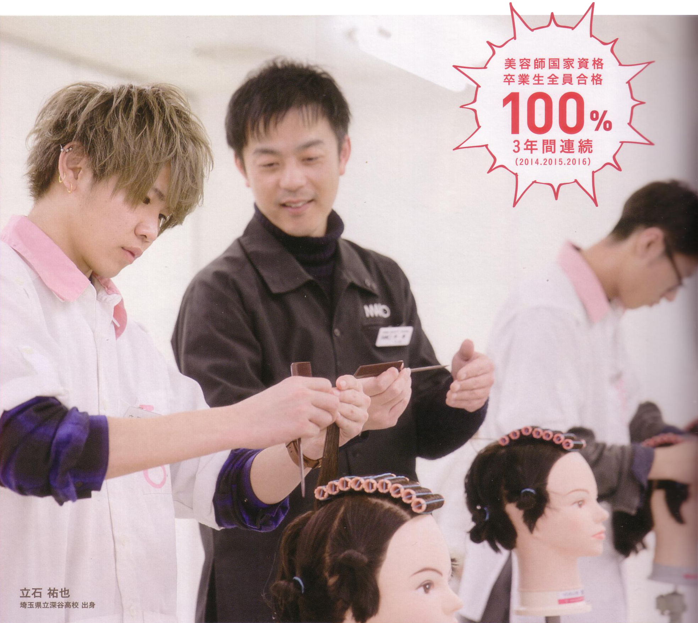
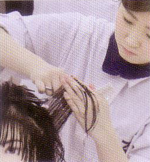
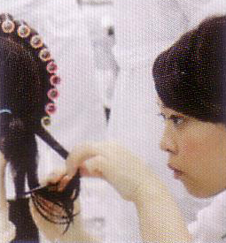
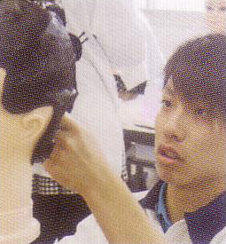
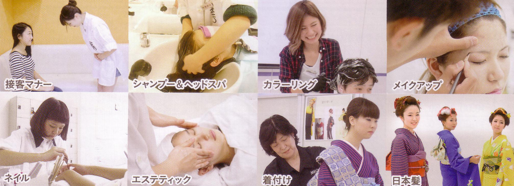
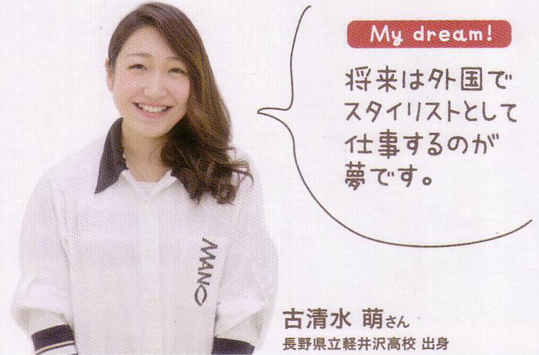

美容科 [2年制]
幅広いカリキュラムで正しい知識と技術を習得！
国家試験はもちろん
サロンで役立つ実践的な技術まで
トータルに学びます。

目指せる職業
- 美容師
- ヘアメイクアーティスト
- カラーリスト
- ネイリスト
- ブライダルヘアメイクアーティスト
- アイリスト
- エステティシャン
目指せる資格
- 美容師国家資格
- ネイリスト技能検定
- メイクアップ技能検定
- 色彩検定
- ヘッドスパ検定
カリキュラム
学科／600時間以上 ※年間必要単位数2000以上(必修科目1400、選択必修科目600)で学期末試験、卒業試験を行います。
必修科目・国家試験課題
国家試験の筆記課題をカバーする充実した学科プログラムです。
| 関係法規・制度 / 30h | 美容師法、衛生行政など美容に関する法律について学ぶ |
| 衛生管理 / 90h | 衛生管理・伝染病予防・消毒法などについて学ぶ |
| 美容保健 / 120h | 人体の構造および機能を理解し、健康な皮膚、毛髪を保つ方法並びに疾患について学ぶ |
| 美容物理・科学 / 90h | 美容に関する器具の理解、香粧品の働きを理解し、サロンで正しく取り扱う上での化学的知識を学ぶ |
| 美容文化論 / 90h | 日本並びに西洋のファッション、デザインの変遷、髪型の歴史、色彩及び表現方法を学ぶ |
| 美容運営管理 / 60h | サロン経営に必要なマーケティング、経営管理、労務管理、接客法などを学ぶ |
| 美容技術理論 / 120h | 美容器具の正しい取り扱い方法や美容器具の基礎技術を理論的に学ぶ |
選択必修科目
美のプロとして幅広く活躍するための知識・完成を学びます。
● カラーコーディネート
● デザイン・造形
● 心理学
● 英仏会話
美容実習／810時間以上
国家試験の実技課題に向けた実践的な美容実習です。

■ カット
正しいガイドの設定・スライスの設定、正しいポジションでのパネルと角度の設定、パネルの引き出し方による長さの把握など、基礎を学び応用に対応できるようにトレーニングします。

■ ワインディング
パーマの基本技術で毛髪をウェーブ状に変化させて、様々なヘアスタイルを作り出す大切な技術です。早く正確に巻くことが求められます。

■ オールウェーブセッティング
セットローションを使用して毛髪をウェーブ状に形成し、ヘアスタイルを作る技術です。
毛髪を溶かす最も重要な基礎技術です。

Student's Voice
国家資格合格！が目標
クラスの雰囲気も盛り上がっています！
クラスの雰囲気も盛り上がっています！
アットホームな雰囲気の学校だと感じたことが入学の決め手だったのですが、思った通りでした。クラスみんなが仲良しで、私たちのことを真剣に考えてくれる先生方がいる、この環境で学べる毎日が、とにかく楽しいです。一番指名をいただけるスタイリスト目指して頑張ります！
